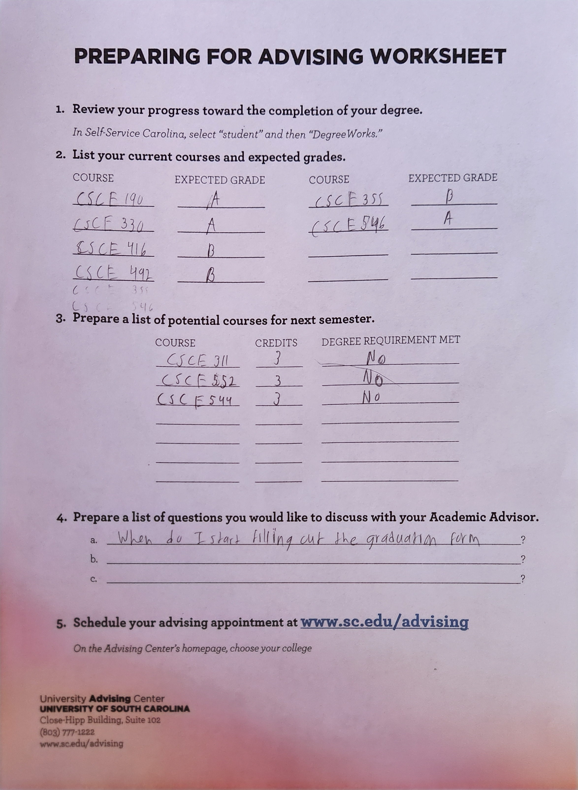
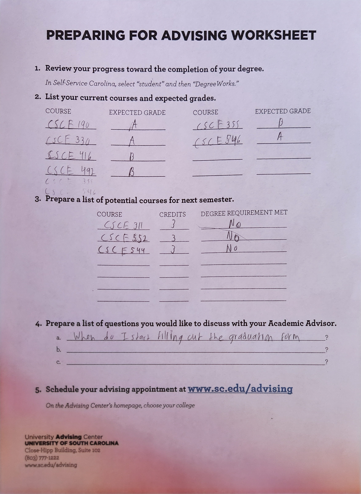
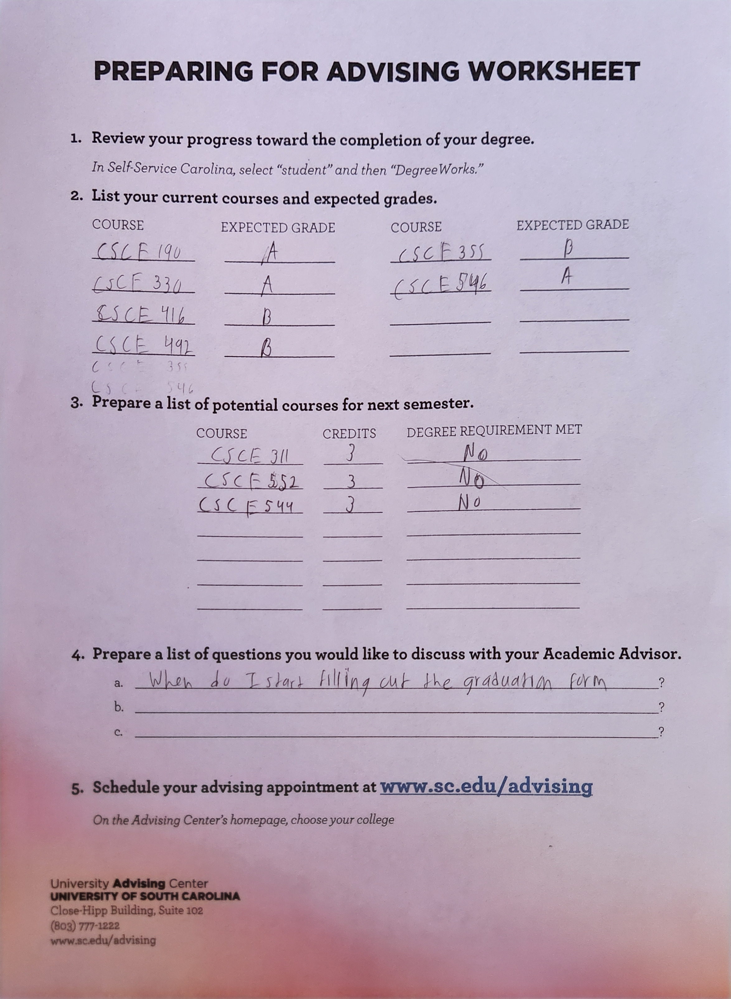

Problem statement: Tracking what you eat
Affinity diagram: CalorieCount
Software that tracks what you eat / suggests food Ideas of what our program does dealing with knowing the calories in food

Software that tracks what you eat / suggests food Ideas of what our program does dealing with knowing the calories in food